Алгоритмы встраивания скрытой информации разделяются на несколько классов:
• работающие с цифровым сигналом (наиболее популярный метод LSB – least signiаicant bit);
• наложение поверх оригинала, разделяются на линейные и нелинейные;
• использование особенностей форматов файлов.
Рассмотрим некоторые алгоритмы реализации стеганографических вложений [29].
Текстова стеганография объединяет методы скрытия информации в текстовых данных без искажения их смысловой нагрузки.
Такими методами являются:
− форматирование текста вставкой пробелов (четное/нечетное количество), четное обозначает 0, нечетное 1;
− метод измерения порядка следования хвостовых маркеров (CR/LF carriage return/line feed или откат/проворот), которые имеют шестнадцатеричный код 0Dh, 0Ah и соответствуют нулю и единице;
− метод хвостовых пробелов, например, дописывание в конец строки 0−16 пробелов позволяет закодировать 4 бита информации;
− метод знаков одинакового начертания (замена знака на аналогичный из другого алфавита).
− методы использования имитирующих функций − подход основан на генерации текстов; для тайного сообщения генерируется осмысленный текст, скрывающий само сообщение.
Наиболее популярным и понятным методом является метод использования младших значащих бит изображения или звукового файла неразличимых органами чувств. При этом в звуковых файлах чаще всего это биты собственных шумов АЦП, в изображениях − биты погрешности сканера или биты для сгенерированных на ПК картинок. Метод младших значащих бит состоит в том, что младшие бита заменяются данными для вложения (рис. 6.8).
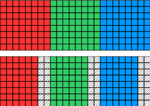 |
Рис. 6.8. Вложение данных в пиксели изображения в формате BMP |
Верхняя часть рисунка это пиксели без вложения. Каждый пиксель состоит из трех байт − компонентов красного, зеленого и синего. В нижней части рисунка показано, как младшие два бита каждой компоненты заменяются данными для вложения. Этот метод возможно реализовать с использованием программы OpenPuff v3.4.0, которая кроме изображений умеет работать с большим количеством файлов других форматов (Bmp, Jpeg, Png, Tga, Pcx, Aiff, Mp3, Next, Wav, 3gp, Mp4, Mpeg I, MPEG II, Vob, Flv, Pdf, Swf ). Несмотря на популярность метода LSB, он наименее устойчив к искажениям и легко обнаруживается с использованием методов математической статистики.
Применительно к звуковым файлам, одна секунда оцифрованного звука с частотой дискретизации 44100 Гц и уровнем отсчета 8 бит в стереорежиме позволяет скрыть, за счет замены наименее значимых младших разрядов на скрываемое сообщение, около 10 Кбайт информации. При этом, изменение значений отсчетов составляет менее 1 %. Такое изменение практически не обнаруживается при прослушивании файла большинством людей.
Эхо-методы применяются в цифровой аудиостеганографии и используют неравномерные промежутки между эхо-сигналами для кодирования последовательности значений. Данный метод основан на встраивании секретной информации в аудиоданные путем добавления эха к записи. Для этого исходный сигнал разбивается на блоки и для каждого блока вычисляется эхосигнал и добавляется к основным данным методом наложения. Для обозначения логического нуля и единицы используется инвертирование эхо-сигнала, определение границы бит выполняется с помощью временного кодирования, т. е. каждый бит занимает промежуток равной длины в сигнале. Существует возможность ввести несколько эхо-сигналов с разным смещением в аудиоданные (рис. 6.9), в этом случае можно передать больше данных, но и уровень дополнительных шумов также увеличивается.
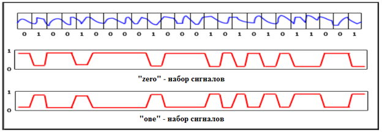 |
Рис. 6.9. Пример добавления к аудиоданным двух эхо-сигналов |
При наложении эха на сигнал необходимо соблюдать условие незаметности для человеческого восприятия. Чаще всего используется задержка около 1/1000, что вполне приемлемо для большинства записей и слушателей. Эхо-методы устойчивы к амплитудным и частотным атакам, но неустойчивы к атакам по времени. С помощью эхо-методов может быть передан большой объем информации.
Преимуществом алгоритмов встраивания данных в пространственной области является то, что стегоданные внедряются в области исходного изображения и нет необходимости выполнять вычислительно громоздкие линейные преобразования изображений. ЦВЗ внедряется за счет манипуляций яркостью или цветовыми составляющими. Большинство алгоритмов встраивания ЦВЗ в пространственную область изображений основаны на использовании широкополосных сигналов (ШПС). Основной идеей применения ШПС в стеганографии является то, что данные внедряются в шумовой сигнал малой мощности. Так как сигнал малой мощности, то для защиты ЦВЗ применяют помехоустойчивые коды.
Методы скрытия сообщений в пространственной области:
− алгоритм Куттера;
− алгоритм Брундокса;
− алгоритм Ленгелаара;
− алгоритм Питаса;
− алгоритм Роджена;
− алгоритм Бендера и др.
Методы скрытия сообщений в пространственной области характеризуются высокой устойчивостью метода ко многим известным видам атак (НЧ-фильтрации, компрессии в соответствии с алгоритмом JPEG, обрезанию краев) и средними показателями визуального искажения.
Метод Куттера − Джордана − Боссена − стеганографический метод, осуществляющий внедрение цифрового водяного знака в изображение. Он был представлен Мартином Куттером, Фредериком Джорданом и Фрэнком Боссеном в журнале Journal of Electronic Imaging в апреле 1998 года.
Метод Куттера − Джордана − Боссена относится к классу алгоритмов, осуществляющих скрытие данных в пространственной области. В алгоритмах этого класса внедрение ЦВЗ выполняется за счет изменения яркостной, либо цветовых компонент пикселя. В этом методе отдельные биты водяного знака многократно внедряются в изображение путем изменения значения синего канала в пикселе. Это изменение пропорционально яркостной компоненте пикселя и может принимать как положительные, так и отрицательные значения в зависимости от значения встраиваемого бита водяного знака [4].
Основными свойствами, которыми должен обладать ЦВЗ – это неразличимость для человеческого глаза и устойчивость к различным искажениям и изменениям изображения. Метод Куттера − Джордана − Боссена удовлетворяет первому требованию за счет встраивания битов водяного знака именно в синий канал пикселя, так как человеческий глаз наименее чувствителен именно к этому цвету [8]. Устойчивость к искажениям изображения обеспечивается путем многократного встраивания битов ЦВЗ в различных частях исходного изображения.
Научные работы в области применения этого метода показали высокую эффективность при его использовании для защиты авторских прав изображений и видеоматериалов [20], а также для проверки целостности изображений и QR-кодов.
Встраивание одного бита информации:
s – бит;
I={R,G,B} – пиксель;
Позиция первого пикселя определяется ключом.
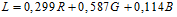 − яркость пикселя, следующие пиксели определяются как значения яркости синего цвета 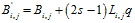.
При этом q является условной энергией встраиваемого сигнала. Чем больше q , тем лучше работает метод и тем выше его заметность.
Декодирование одного бита информации:
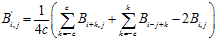,
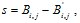
где с − размеры крестообразной области, изображенной на рис. 6.10.
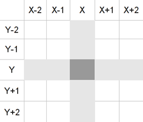 |
Рис. 6.10. Пример изображения крестообразной области |
Хотя правильное извлечение наиболее вероятно, оно не является гарантированным. Функции встраивания и извлечения информации из контейнера не являются симметричными, т. е. функция извлечения не является обратной к функции встраивания, поэтому значение предсказанного бита имеет вероятностный характер и, вообще говоря, может не совпадать с исходным значением бита цифрового водяного знака. Для того, чтобы увеличить вероятность правильного извлечения бита информации используется многократное встраивание одного и того же бита в контейнер. Тогда бит сообщения может быть вычислен как
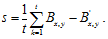
При этом рекомендуется использовать порядок обхода, представленный на рис. 6.11.
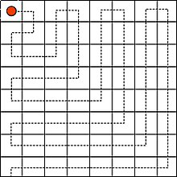 |
Рис. 6.11. Рекомендуемая схема обхода контейнера |
В современной стеганографии наиболее популярны Вейвлет-преобразование и ДКП ввиду их широкого применения в алгоритмах сжатия изображений. Для скрытия данных в области преобразования предпочтительно применять то же преобразование, которому изображение может быть подвергнуто при дальнейшем сжатии, например, при сжатии по стандарту JPEG − использовать ДКП, а при использовании JPEG-2000 − вейвлет-преобразование. Это делает стегоалгоритм более устойчивым к дальнейшему сжатию изображения этими алгоритмами. Нужно отметить, что стегоалгоритм, использующий ДКП не обязан быть устойчивым к компрессии с использованием вейвлет-преобразования (JPEG-2000) и наоборот. Обычно заранее не известен применяемый алгоритм сжатия. Поэтому главная задача при попытке скрыть информацию в области преобразования − нахождение максимально робастного ко всем алгоритмам преобразования, т. е. не зависящего от применяемого в дальнейшем алгоритма сжатия. Обычно предпочтения относительно конкретного стегоалгоритма определяются экспериментально. Методы скрытия в частотной области характеризуются:
− высокой устойчивостью ко многим известным видам атак (НЧ-фильтрации, компрессии в соответствии с алгоритмом JPEG, обрезанию краев);
− низкими показателями визуального искажения.
Также применяется в цифровой аудиостеганографии. В данном методе используется тот факт, что человеческое ухо воспринимает не значения фазы, а только их разность. Сигнал разбивается на участки, значения фазы на первом участке используются для кодирования скрываемого сообщения, значения фаз остальных участков таким образом, чтобы разность фаз между участками осталась неизменной.
Для кодирования значений фаз, на множестве фаз выделяется набор равномерно распределенных значений, соответствующих битам 0 и 1. Значение фазы заменяется ближайшим значением, соответствующим требуемому биту. Разность значений в наборе зависит от частоты полосы и варьируется от 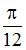 на чувствительных полосах до 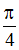 на высокочастотных полосах. Получатель должен знать длину участка, чтобы иметь возможность восстановить данные, добавленные с помощью частотного метода в контейнер.
Фазовое кодирование является одним из самых эффективных методов скрытия информации, хотя обычно позволяет добавлять информацию не более 1% от данных контейнера.
В аудиостеганографии метод расширенного спектра пытается передать секретные сведения по спектру частот звукового сигнала. Этот метод чем-то схож с методом LSB, который передает биты сообщения случайным образом по всему звуковому файлу. Тем не менее, в отличие от способа LSB, метод расширенного спектра распространяет секретную информацию по спектру частот звукового файла, используя код, который не зависит от фактического сигнала. В результате конечный сигнал занимает полосу пропускания, которая размером больше, чем требуемый размер для передачи.
Метод расширенного спектра может внести вклад в повышение производительности по сравнению с методами LSB, фазового и четного кодирований путем умеренной скорости передачи данных и высоким уровнем устойчивости. Однако метод расширенного спектра имеет один существенный недостаток – он может вносить шум в аудиофайл.